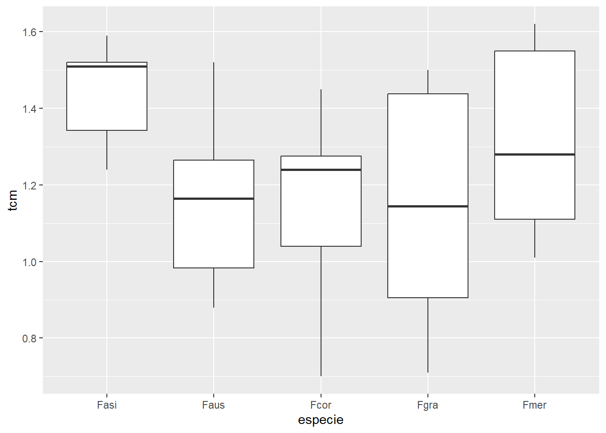
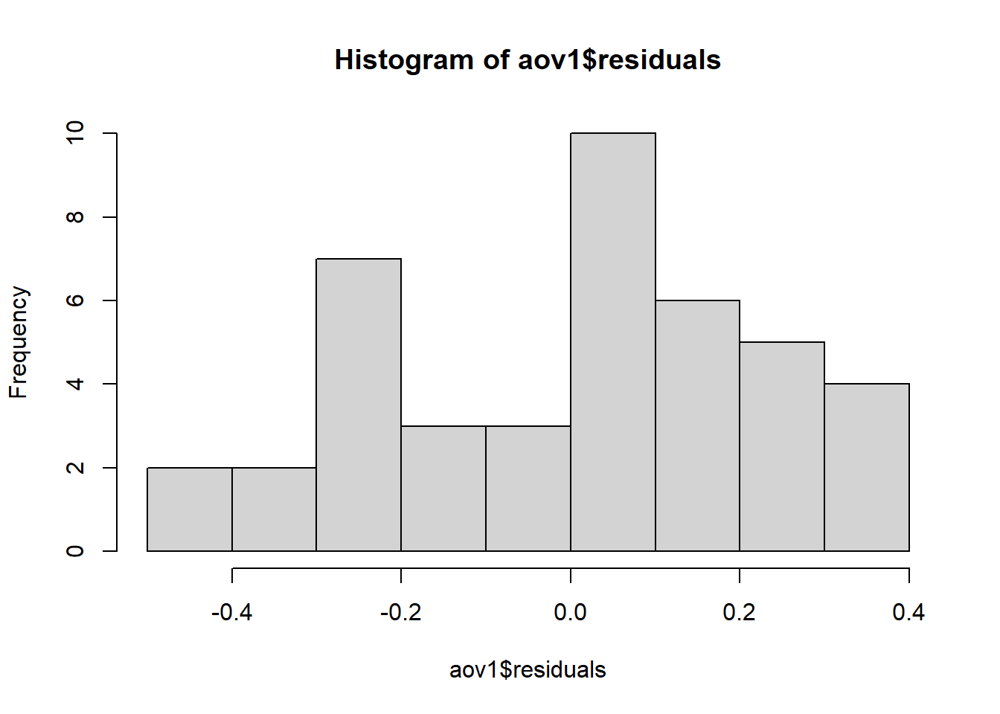
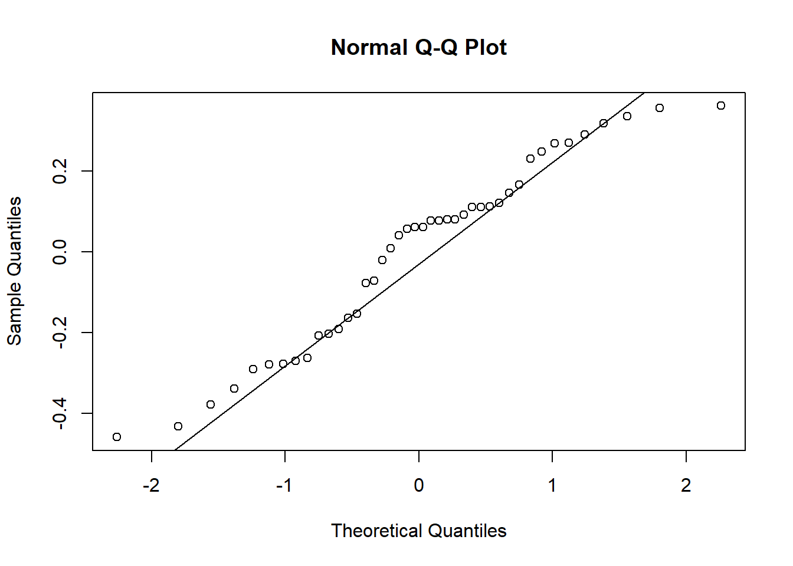
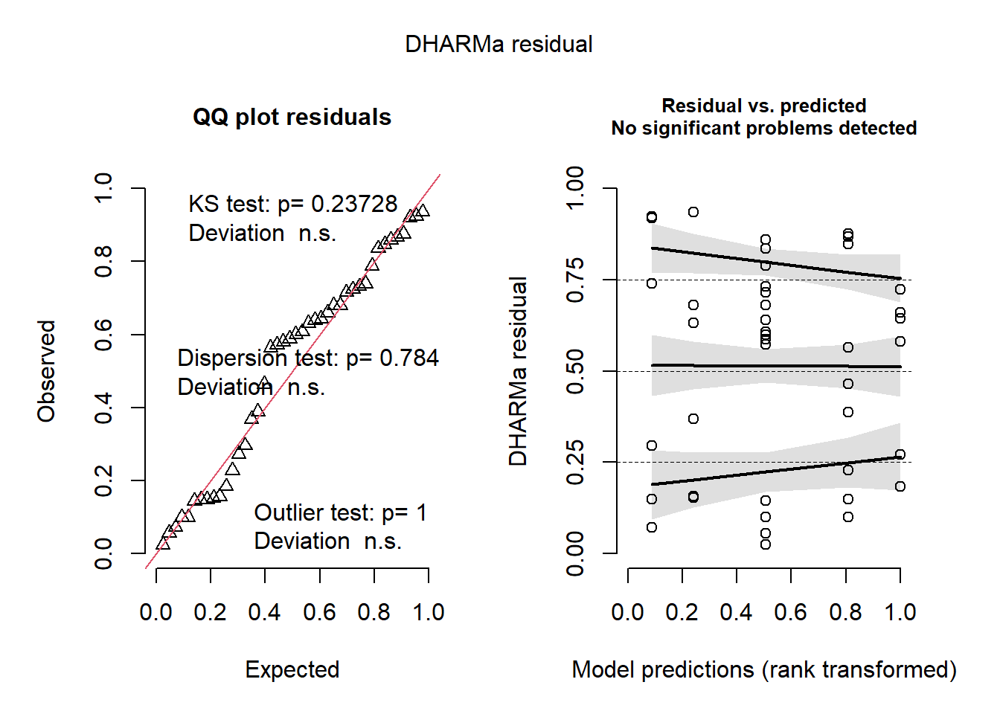
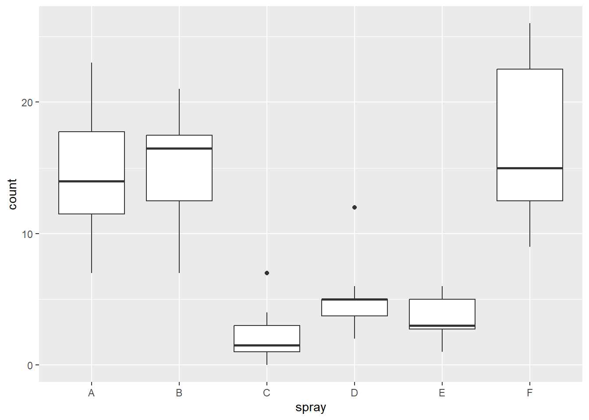
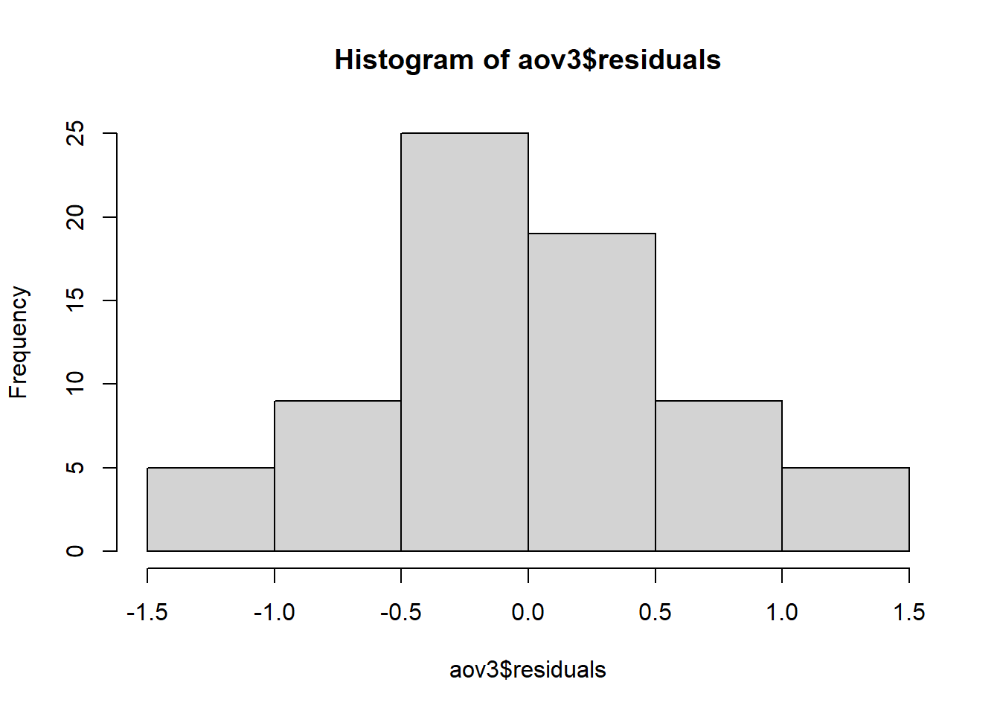
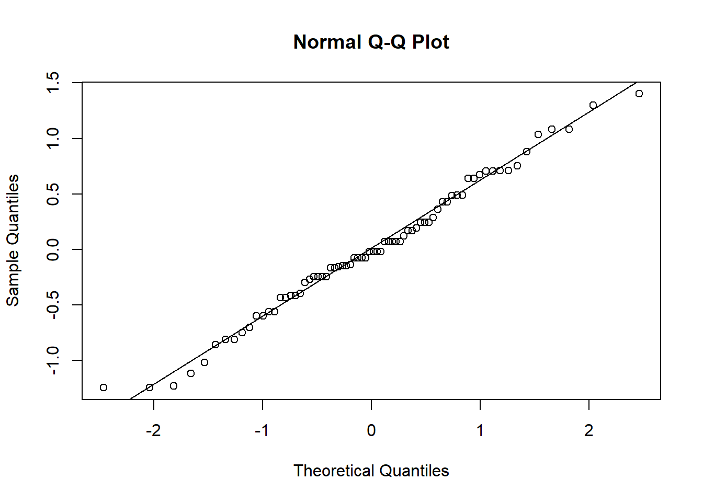
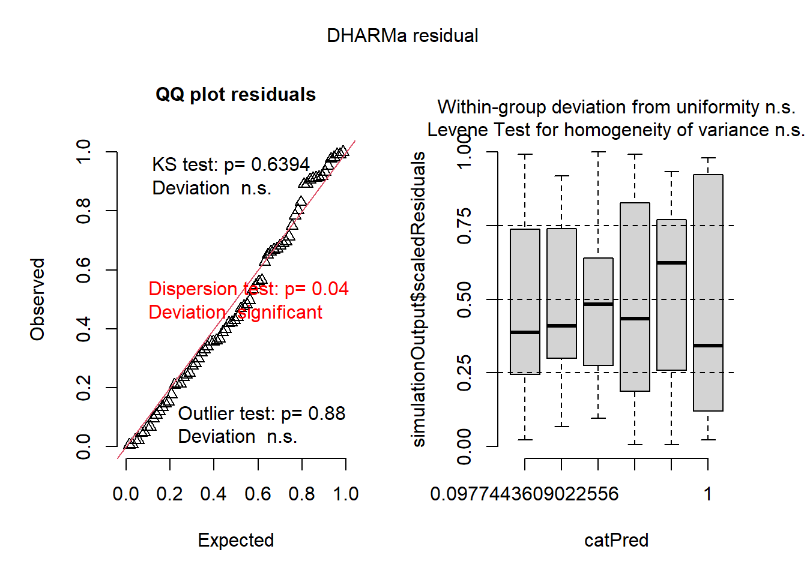

Codigo
library (readxl)
library (tidyverse)
micelial <- read_excel("dados-diversos.xlsx", "micelial")
micelial |>
ggplot(aes(especie, tcm))+
geom_boxplot()
El análisis de la varianza, o ANOVA, es un análisis estadístico para determinar la contribución de los distintos factores a la varianza total de un experimento.
El análisis de varianza de factor I, o ANOVA simple, es unilevado. Es adecuado para experimentos con una sola variable independiente en dos o más niveles.
Análisis exploratorio. previo al análisis estadístico, es importante, realizar un análisis visual. Este análisis permite extraer algunas conclusiones como un patron de distribución de los datos, si son vusualmante normales o si estan agrupados de alguna manera
Iniciamos nuestro analisis exploratorio
library (readxl)
library (tidyverse)
micelial <- read_excel("dados-diversos.xlsx", "micelial")
micelial |>
ggplot(aes(especie, tcm))+
geom_boxplot()
Una vez realizado este análisis visual, ya sea con boxplots, histogramas, columnas, dispersión… pasamos a la aplicación del ANOVA factor I.
aov1 <- aov(tcm ~ especie, data = micelial)
summary (aov1) Df Sum Sq Mean Sq F value Pr(>F)
especie 4 0.4692 0.11729 1.983 0.117
Residuals 37 2.1885 0.05915 El supuesto de normalidad de los datos de la muestra es una condición necesaria para realizar muchas inferencias válidas sobre los parámetros de la población. Varios de los distintos métodos de estimación y pruebas de hipótesis existentes se han formulado bajo el supuesto de que la muestra aleatoria se ha extraído de una población gaussiana.
En el análisis de la varianza (ANOVA), hay un supuesto que debe cumplirse, y es que los errores tienen una varianza común, es decir, homocedasticidad. Esto implica que cada tratamiento comparado por la prueba F debe tener aproximadamente la misma varianza para que el ANOVA sea válido. Cuando no se cumple este supuesto, decimos que las varianzas no son homogéneas, o que hay heteroscedasticidad.
#Premisas
library (performance)
check_heteroscedasticity(aov1)OK: Error variance appears to be homoscedastic (p = 0.175).check_normality(aov1)OK: residuals appear as normally distributed (p = 0.074).#Test de Normalidad
hist(aov1$residuals) 
#Permite ver la curva de distribución de los datos, confirmando lo obtenido en las pruebas anteriores: distribución normal.
shapiro.test(aov1$residuals)
Shapiro-Wilk normality test
data: aov1$residuals
W = 0.95101, p-value = 0.07022Otra forma de comprobar si una muestra sigue la distribución gaussiana es mediante las gráficas de la rango de probabilidad normal y su rango con intervalo de confianza simulado.
Podemos hacerlo utilizando las funciones “qqnorm()” y “qqline” sin la envolvente:
qqnorm(aov1$residuals)
qqline(aov1$residuals)
O con un con un rango con el paquete “DHARMa” y la función “plot():
library (DHARMa) #evaluar y diagnosticar el ajuste de modelos de regresión complejos
plot(simulateResiduals(aov1))
Es posible encontar casos como el siguiente:
InsectSprays count spray
1 10 A
2 7 A
3 20 A
4 14 A
5 14 A
6 12 A
7 10 A
8 23 A
9 17 A
10 20 A
11 14 A
12 13 A
13 11 B
14 17 B
15 21 B
16 11 B
17 16 B
18 14 B
19 17 B
20 17 B
21 19 B
22 21 B
23 7 B
24 13 B
25 0 C
26 1 C
27 7 C
28 2 C
29 3 C
30 1 C
31 2 C
32 1 C
33 3 C
34 0 C
35 1 C
36 4 C
37 3 D
38 5 D
39 12 D
40 6 D
41 4 D
42 3 D
43 5 D
44 5 D
45 5 D
46 5 D
47 2 D
48 4 D
49 3 E
50 5 E
51 3 E
52 5 E
53 3 E
54 6 E
55 1 E
56 1 E
57 3 E
58 2 E
59 6 E
60 4 E
61 11 F
62 9 F
63 15 F
64 22 F
65 15 F
66 16 F
67 13 F
68 10 F
69 26 F
70 26 F
71 24 F
72 13 Finsects <- as_tibble(InsectSprays) |>
select (spray, count)
insects |>
ggplot(aes(spray, count))+
geom_boxplot()
Tras el análisis exploratorio, nos dimos cuenta de que los datos tenían una distribución ligeramente diferente. Entonces aplicamos el ANOVA para comprobar los supuestos.
aov2 <- aov(count ~ spray, data = insects)
summary (aov2) Df Sum Sq Mean Sq F value Pr(>F)
spray 5 2669 533.8 34.7 <2e-16 ***
Residuals 66 1015 15.4
---
Signif. codes: 0 '***' 0.001 '**' 0.01 '*' 0.05 '.' 0.1 ' ' 1check_heteroscedasticity(aov2)Warning: Heteroscedasticity (non-constant error variance) detected (p < .001).check_normality(aov2)Warning: Non-normality of residuals detected (p = 0.022).Una vez hecho esto, vemos que los datos no muestran una distribución normal y son heteroscedásticos. Una de las alternativas que tenemos para trabajar con este conjunto es la transformación. En este caso, utilizaremos la transformación raíz (sqrt), pero R tiene varias transformaciones posibles. Las transformaciones se hacen por ensayo y error, hasta que una de ellas cumple lo que necesitas.
aov3 <- aov(sqrt(count) ~ spray, data = insects)
summary (aov3) Df Sum Sq Mean Sq F value Pr(>F)
spray 5 88.44 17.688 44.8 <2e-16 ***
Residuals 66 26.06 0.395
---
Signif. codes: 0 '***' 0.001 '**' 0.01 '*' 0.05 '.' 0.1 ' ' 1check_heteroscedasticity(aov3)OK: Error variance appears to be homoscedastic (p = 0.854).check_normality(aov3)OK: residuals appear as normally distributed (p = 0.681).#Los datos transformados son normales y homocedásticos.
#Test de Normalidad
hist(aov3$residuals)
shapiro.test(aov3$residuals)
Shapiro-Wilk normality test
data: aov3$residuals
W = 0.98721, p-value = 0.6814#Gráficos para distribucion gaussiana
qqnorm(aov3$residuals)
qqline(aov3$residuals)
Calcular medias marginales estimadas (EMMs) para factores específicos o combinaciones de factores en un modelo lineal; y opcionalmente, comparaciones o contrastes entre ellos. Las EMM también se conocen como medias de mínimos cuadrados.
library (emmeans)
aov3_means <- emmeans(aov3, ~ spray,
type = "response")
aov3_means spray response SE df lower.CL upper.CL
A 14.14 1.364 66 11.550 17.00
B 15.03 1.406 66 12.352 17.97
C 1.55 0.452 66 0.779 2.58
D 4.68 0.785 66 3.248 6.38
E 3.27 0.656 66 2.095 4.72
F 16.15 1.458 66 13.370 19.19
Confidence level used: 0.95
Intervals are back-transformed from the sqrt scale pwpm(aov3_means) A B C D E F
A [14.14] 0.9975 <.0001 <.0001 <.0001 0.9145
B -0.116 [15.03] <.0001 <.0001 <.0001 0.9936
C 2.516 2.632 [ 1.55] 0.0081 0.2513 <.0001
D 1.596 1.712 -0.919 [ 4.68] 0.7366 <.0001
E 1.951 2.067 -0.565 0.355 [ 3.27] <.0001
F -0.258 -0.142 -2.774 -1.854 -2.209 [16.15]
Row and column labels: spray
Upper triangle: P values adjust = "tukey"
Diagonal: [Estimates] (response) type = "response"
Lower triangle: Comparisons (estimate) earlier vs. laterPruebas simultáneas e intervalos de confianza para hipótesis lineales generales en modelos paramétricos, incluidos modelos lineales, lineales generalizados, lineales de efectos mixtos y de supervivencia.
Convierta un vector lógico o un vector de valores p o una matriz de correlación, diferencia o distancia en una visualización que identifique los pares para los que las diferencias no fueron significativamente diferentes.
Extrae y muestra información sobre todas las comparaciones de medias por mínimos cuadrados pareados.
library (multcomp)
library (multcompView)
cld(aov3_means) spray response SE df lower.CL upper.CL .group
C 1.55 0.452 66 0.779 2.58 1
E 3.27 0.656 66 2.095 4.72 12
D 4.68 0.785 66 3.248 6.38 2
A 14.14 1.364 66 11.550 17.00 3
B 15.03 1.406 66 12.352 17.97 3
F 16.15 1.458 66 13.370 19.19 3
Confidence level used: 0.95
Intervals are back-transformed from the sqrt scale
Note: contrasts are still on the sqrt scale. Consider using
regrid() if you want contrasts of back-transformed estimates.
P value adjustment: tukey method for comparing a family of 6 estimates
significance level used: alpha = 0.05
NOTE: If two or more means share the same grouping symbol,
then we cannot show them to be different.
But we also did not show them to be the same. Las pruebas no paramétricas, también conocidas como pruebas de distribución libre, son aquellas que se basan en determinadas hipótesis, pero que no tienen una organización normal. Suelen contener resultados estadísticos a partir de sus ordenaciones, lo que facilita su comprensión.
La prueba de Kruskal-Wallis se utiliza en situaciones en las que queremos comparar más de dos grupos independientes, de igual tamaño o no, con una variable de respuesta cuantitativa. La prueba es una alternativa cuando no se cumplen los supuestos exigidos por la prueba F del análisis de la varianza, ya que la prueba de Kruskal-Wallis prescinde del supuesto de normalidad y homocedasticidad.
kruskal.test(count ~spray, data = insects)
Kruskal-Wallis rank sum test
data: count by spray
Kruskal-Wallis chi-squared = 54.691, df = 5, p-value = 1.511e-10library (agricolae)
kruskal(insects$count, insects$spray,
console = TRUE)
Study: insects$count ~ insects$spray
Kruskal-Wallis test's
Ties or no Ties
Critical Value: 54.69134
Degrees of freedom: 5
Pvalue Chisq : 1.510845e-10
insects$spray, means of the ranks
insects.count r
A 52.16667 12
B 54.83333 12
C 11.45833 12
D 25.58333 12
E 19.33333 12
F 55.62500 12
Post Hoc Analysis
t-Student: 1.996564
Alpha : 0.05
Minimum Significant Difference: 8.462804
Treatments with the same letter are not significantly different.
insects$count groups
F 55.62500 a
B 54.83333 a
A 52.16667 a
D 25.58333 b
E 19.33333 bc
C 11.45833 cSe utiliza para ajustar modelos lineales generalizados, especificados mediante una descripción simbólica del predictor lineal y una descripción de la distribución de errores, son una extensión de los modelos de regresión lineal que permiten a la variable de respuesta siga una distribución diferente de la normal y se relacione con las variables explicativas a traves de la función de enlace
Los objetos de familia proporcionan una forma cómoda de especificar los detalles de los modelos utilizados por funciones como “glm”.
glm1 <- glm(count ~ spray,
data = insects,
family = poisson(link = "identity"))Visualización gráfica y comparación de medias.
library (DHARMa)
plot(simulateResiduals(glm1))
summary(glm1)
Call:
glm(formula = count ~ spray, family = poisson(link = "identity"),
data = insects)
Coefficients:
Estimate Std. Error z value Pr(>|z|)
(Intercept) 14.5000 1.0992 13.191 < 2e-16 ***
sprayB 0.8333 1.5767 0.529 0.597
sprayC -12.4167 1.1756 -10.562 < 2e-16 ***
sprayD -9.5833 1.2720 -7.534 4.92e-14 ***
sprayE -11.0000 1.2247 -8.981 < 2e-16 ***
sprayF 2.1667 1.6116 1.344 0.179
---
Signif. codes: 0 '***' 0.001 '**' 0.01 '*' 0.05 '.' 0.1 ' ' 1
(Dispersion parameter for poisson family taken to be 1)
Null deviance: 409.041 on 71 degrees of freedom
Residual deviance: 98.329 on 66 degrees of freedom
AIC: 376.59
Number of Fisher Scoring iterations: 3glml_means <- emmeans(glm1, ~ spray)
cld(glml_means) spray emmean SE df asymp.LCL asymp.UCL .group
C 2.08 0.417 Inf 1.27 2.90 1
E 3.50 0.540 Inf 2.44 4.56 12
D 4.92 0.640 Inf 3.66 6.17 2
A 14.50 1.099 Inf 12.35 16.65 3
B 15.33 1.130 Inf 13.12 17.55 3
F 16.67 1.179 Inf 14.36 18.98 3
Confidence level used: 0.95
P value adjustment: tukey method for comparing a family of 6 estimates
significance level used: alpha = 0.05
NOTE: If two or more means share the same grouping symbol,
then we cannot show them to be different.
But we also did not show them to be the same. La transformación de Box-Cox es una transformación potencial que elimina la no linealidad entre variables, las diferentes varianzas y la asimetría de las variables. La función boxcox del paquete MASS en R puede utilizarse para estimar el parámetro de transformación utilizando la estimación de máxima verosimilitud. Debe calcular un modelo lineal con la función lm y pasarlo a la función boxcox para determinar la “lambda” adecuada.
La elección del valor de 𝜆es crucial y generalmente se determina mediante un procedimiento de máxima verosimilitud que busca el valor de 𝜆que maximiza la normalidad de los datos transformados y la homocedasticidad de los residuos en un modelo de regresión.
library (MASS)
insects# A tibble: 72 × 2
spray count
<fct> <dbl>
1 A 10
2 A 7
3 A 20
4 A 14
5 A 14
6 A 12
7 A 10
8 A 23
9 A 17
10 A 20
# ℹ 62 more rowsb <- boxcox (lm(insects$count+0.1 ~ 1))
lambda <- b$x[which.max(b$y)]
lambda[1] 0.4242424#La línea vertical discontinua del centro representa el parámetro estimado lambda hat.
insects$count2 <- (insects$count ^ lambda - 1) / lambda
insects$count [1] 10 7 20 14 14 12 10 23 17 20 14 13 11 17 21 11 16 14 17 17 19 21 7 13 0
[26] 1 7 2 3 1 2 1 3 0 1 4 3 5 12 6 4 3 5 5 5 5 2 4 3 5
[51] 3 5 3 6 1 1 3 2 6 4 11 9 15 22 15 16 13 10 26 26 24 13